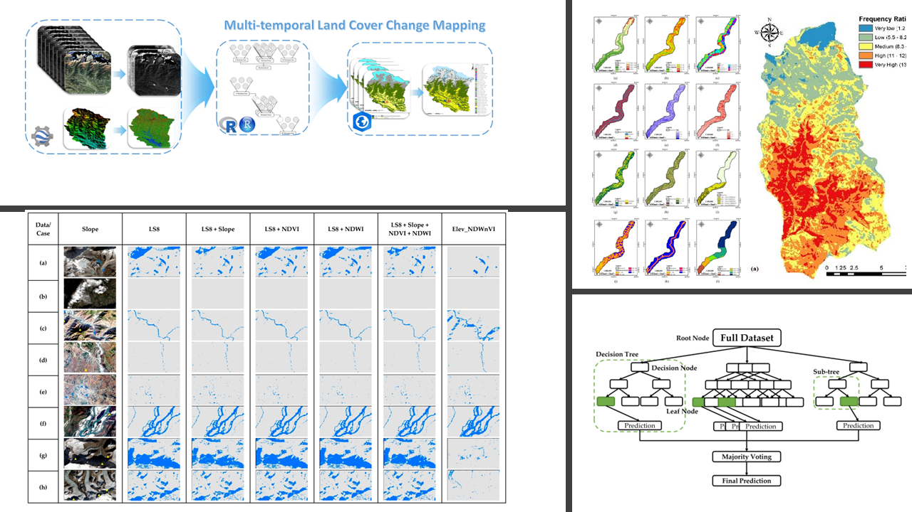
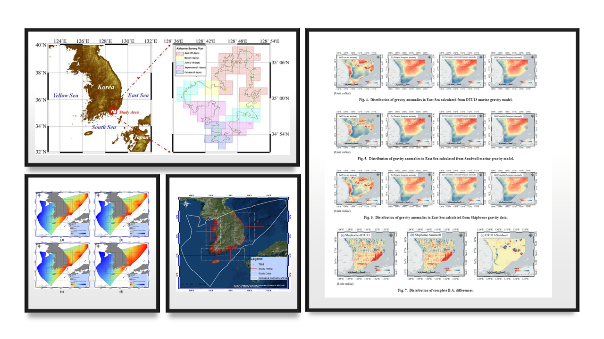
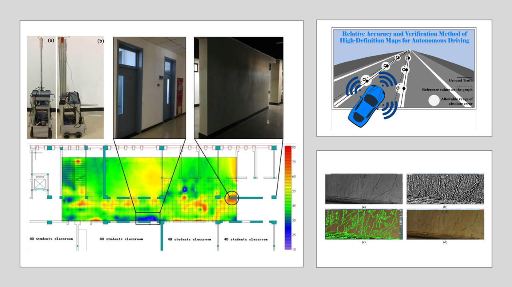

Past Works
This page contains a list of past works I was involved with. Click on the links to learn more about the project and related publications.
Integration of machine learning methods and geospatial data to improve the spatial prediction on mapping
This project focuses on the application of machine learning models in the assessment of land cover, water management, climate, and other valuable aspects of natural resources management. These works step forward in progress by developing cutting-edge models and assessing different algorithms for their ability to aid in the prediction of different environmental and climatic conditions.

Development of airborne LiDAR bathymetry equipment localization technology
This project was used to develop an improved LiDAR sensor for use in surveys around South Korea. Vital assessments of the data collected by the device was performed to ensure the accuracy of their readings for different hydrographic conditions.

Mobile MMS – UAV MMS integration technique based on image pairing method for precise geospatial information construction in urban area
In order to provide a real-time system for mapping urban areas, this project developed a method combining mobile mapping systems and data collected from unmanned aerial vehicles. This research provided an accurate and useful method of mapping urban locations with the benefit of low effort and time required for map production, which is a dramatic improvement on previous unreliable and time-consuming methods.

Remote Sensing (ISSN 2072-4292) Special Issue “Artificial Intelligence and Earth Observation in Support of the UN Sustainable Development Goals”
In this Special Issue on "Artificial Intelligence and Earth Observation in Support of the UN Sustainable Development Goals", we called for contributions that describe methods and ongoing research for the application of AI and EO for information extraction, monitoring, and implementation strategies of emerging challenges and future directions.

Sensors and Materials (ISSN 2435-0869) Special Issue “Remote Sensing and Geospatial Technologies for Sustainable Development”
In this Special Issue on "Remote Sensing and Geospatial Technologies for Sustainable Development", we aimed to focus on all aspects of research, development, and applications related to remote sensing and geospatial technologies for monitoring and extracting information on Earth’s resources to help promote sustainable development. .